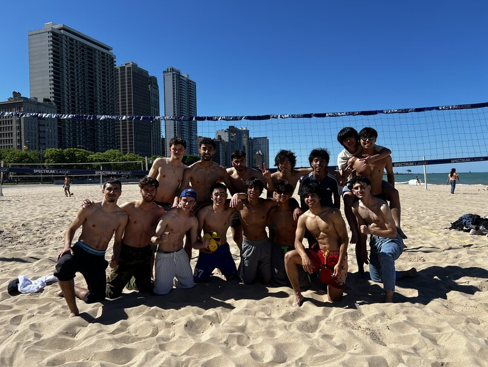

My Portfolio
Introduction
Hobbies
Resume
My Hobbies
Welcome to my hobbies page! These are all of my hobbies with recent pictures!
1. Guitar
My favorite songs to play on guitar:
Upside Down - Jack Johnson
Beaches - beabadoobee
Bocchi's Solo - BOCCHI THE ROCK!
2. Gym
Fun facts about the gym:
I mainly workout at LA Fitness.
I weightlift on a regular basis, about 5 days a week.
This picture was taken at the hotel's gym I stayed at in Korea!
3. Volleyball

Fun facts about volleyball:
I played beach volleyball almost every other week during the summer of Junior year!
The adults in the picture were random strangers that asked to play against me and my friends.
We beat the strangers 2-0 in games to 21 points!
4. Travelling/Photography
Fun facts about Travelling/Photography:
I took this picture in Seoul, Korea.
I enjoy travelling a lot! Although I don't get to do it often.
When I'm travelling, I love taking pictures to remember my trip and share with friends.